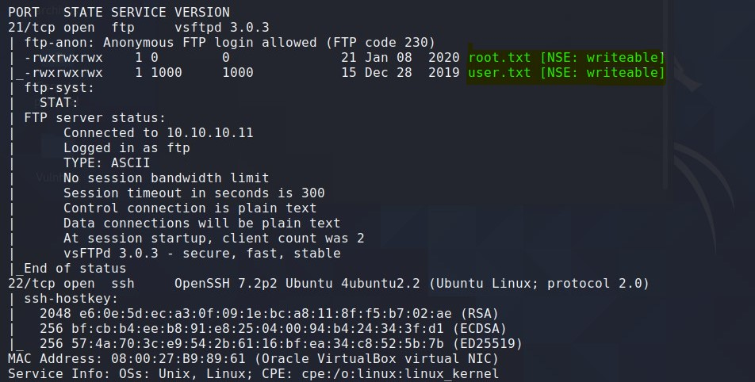
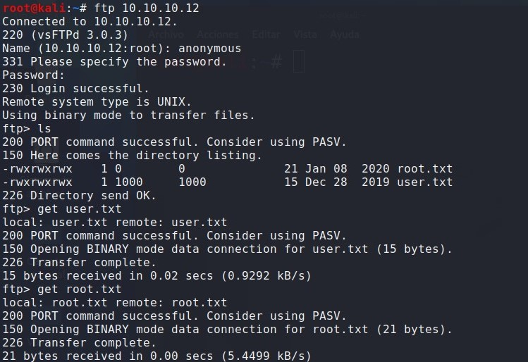
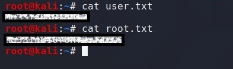

OCLAT
Enumeracion de servicios y puertos
Empezaremos usando la herramienta NMAP :nmap -p- --open T5 -n url y ya vemos que nos reporta vastante informacion.
Como vemos en la imagen el mismo nmap nos reporta dos puertos abiertos el purto 21 para ftp y el 22 para ssh , accederemos por el puerto 21 ya que nos inidica que tiene avilitado el user anonymous.
Acceso a la maquina por ftp
accedemos por el puerto 21 con el user anonymous y el pass en blanco y ya estamos dentro con ls listamos lo que hay y aparecen las flags.
Obteniendo las Flags
Bueno esta casi ya esta usamos la funcion get y descargamos los ficheros en nuestra terminal.
Luego le aplicamos un cat a los archivos y ya tenemos las flags user y root esta ultima la usaremos en el reto II.
Herramientas utilizadas para este reto:
Foro CHE y grupo de telegram
Podeis pedir ayuda de cualquier reto a la comunidad. Grupo de Telegram